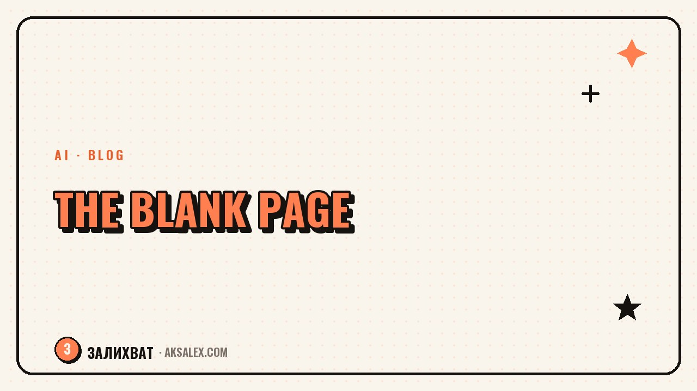

The Fear of the Blank Page: How to Write the First Line

Why the Blank Page Is Scary
The block comes from wanting to write well right away. You're holding an image of the perfect text in your head and comparing every phrase that hasn't appeared yet to it. Naturally, nothing measures up to the ideal in your mind, and your hand won't commit to writing.
The second source of fear is the inner critic that switches on too early. It should work at the editing stage, not the creation stage. When the critic and the author act at the same time, they block each other. The task is to separate them: write first, judge later.
The blank page is scary not because you have nothing to say, but because you want to say it perfectly right away. Give yourself permission to write a draft.
The Main Principle: Bad First
The only reliable way to beat the block is to allow yourself to write badly. A draft doesn't have to be good, it has to exist. Bad text can be improved, a blank page can't. The first version exists precisely so you can rewrite it later.
Separate creation from editing physically: write the whole draft without going back or fixing a single word. Even if a phrase is clumsy - leave it and move on. You'll do the editing at the end, with a fresh eye. This one trick removes most of the paralysis.
A bad draft always beats a perfect unwritten one. Text is born in the editing, not in the first attempt.
Tricks to Get Moving
There are specific tricks that get around the block. Pick the one that resonates and keep it in reserve for the white screen.
| Trick | How it works | When it helps |
|---|---|---|
| Start in the middle | Skip the intro, write the substance | The first phrase won't come |
| Write like you talk | Say the thought out loud and write it down | The text sounds forced |
| One sentence | Promise yourself just one line | The volume is intimidating |
| Free flow | Write everything nonstop for 5 minutes | A total block |
| Answer a question | Imagine you were asked - and answer | You don't know where to start |
The 'start in the middle' trick helps most often: the intro is usually the hardest part, while the substance is easier to write. Having written the main part, you'll come back to the beginning once the text has picked up speed, and the first line will find itself.
AI as a Jump-Start
If the block won't let go, use AI as a starter. Give it the topic and your thought in a couple of words and ask it to sketch out the first paragraph or a pair of options for the first line. Even if you don't use its text, it'll get you off the dead center.
- Ask for 5 options for the first line on your topic.
- Give it your key points and ask it to assemble a draft to rework.
- Describe the thought by voice, drop in the transcript, and ask it to tidy it up.
- Ask which angle to take on the topic if you don't know the opening.
AI here isn't the author but a way to break the ice. Often, seeing its version, you realize how you want to say it in your own way, and from there you write yourself. The main thing is to get moving, not to stay stuck in front of a blank screen.
Mistakes That Make the Block Worse
The first mistake is editing as you write. It switches the critic on too early and stifles the flow. Write first, edit later. The second is waiting for inspiration: it comes during the process, not before it. Start writing badly, and inspiration will catch up.
The third mistake is comparing your draft to someone else's finished text. You're seeing their final version after ten edits and your own first raw one - the comparison is unfair. The fourth is building up pressure by putting it off. The longer you don't start, the scarier the page gets. Start with one imperfect line right now.
Frequently Asked Questions
How do I beat the fear of the blank page?
Allow yourself to write badly. A draft doesn't have to be good, it has to exist. Separate creation from editing: write the whole text without editing, and tidy it up at the very end.
What should I do if the first line won't come?
Start in the middle - skip the intro and write the substance. The first phrase is usually the hardest. Once the text picks up speed, you'll come back to the beginning and the line will come much more easily.
Does AI help with writer's block?
Yes, as a jump-start. Ask it for a couple of options for the first line or a draft based on your key points. Even if you don't use its text, it'll get you off the dead center and show you an angle.
Why shouldn't I edit as I go?
Editing switches on the inner critic too early and stifles the flow. The author and the critic get in each other's way when they work at the same time. First write the whole draft, then edit with a fresh eye.
Do I need to wait for inspiration to start?
No. Inspiration comes during the process, not before it. Start writing badly, get down that first imperfect line - and being pulled into the text will bring both the thoughts and the mood along with it.
Enjoyed this one? Here's what to read next. A system that helps you write a post in 20 minutes during a nap window - no blank-page freeze, no do-overs.
Read the article →not by hand